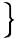

However, the travellers' eyes were soon able to trace the rest of the Earth's surface not only with facility, but even to follow its outline with absolute delight. This was in consequence of two different phenomena, one of which they could easily account for; but the other they could not explain without Barbican's assistance. No wonder. Never before had mortal eye beheld such a sight. Let us take each in its turn.
We all know that the ashy light by means of which we perceive what is called the Old Moon in the Young Moon's arms is due to the Earth-shine, or the reflection of the solar rays from the Earth to the Moon. By a phenomenon exactly identical, the travellers could now see that portion of the Earth's surface which was unillumined by the Sun; only, as, in consequence of the different areas of the respective surfaces, the Earthlight is thirteen times more intense than the Moonlight, the dark portion of the Earth's disc appeared considerably more adumbrated than the Old Moon.
But the other phenomenon had burst on them so suddenly that they uttered a cry loud enough to wake up Barbican from his problem. They had discovered a true starry ring! Around the Earth's outline, a ring, of internally well defined thickness, but somewhat hazy on the outside, could easily be traced by its surpassing brilliancy. Neither the Pleiades, the Northern Crown, the Magellanic Clouds nor the great nebulas of Orion, or of Argo, no sparkling cluster, no corona, no group of glittering star-dust that the travellers had ever gazed at, presented such attractions as the diamond ring they now saw encompassing the Earth, just as the brass meridian encompasses a terrestrial globe. The resplendency of its light enchanted them, its pure softness delighted them, its perfect regularity astonished them. What was it? they asked Barbican. In a few words he explained it. The beautiful luminous ring was simply an optical illusion, produced by the refraction of the terrestrial atmosphere. All the stars in the neighborhood of the Earth, and many actually behind it, had their rays refracted, diffused, radiated, and finally converged to a focus by the atmosphere, as if by a double convex lens of gigantic power.
Whilst the travellers were profoundly absorbed in the contemplation of this wondrous sight, a sparkling shower of shooting stars suddenly flashed over the Earth's dark surface, making it for a moment as bright as the external ring. Hundreds of bolides, catching fire from contact with the atmosphere, streaked the darkness with their luminous trails, overspreading it occasionally with sheets of electric flame. The Earth was just then in her perihelion, and we all know that the months of November and December are so highly favorable to the appearance of these meteoric showers that at the famous display of November, 1866, astronomers counted as many as 8,000 between midnight and four o'clock.
Barbican explained the whole matter in a few words. The Earth, when nearest to the sun, occasionally plunges into a group of countless meteors travelling like comets, in eccentric orbits around the grand centre of our solar system. The atmosphere strikes the rapidly moving bodies with such violence as to set them on fire and render them visible to us in beautiful star showers. But to this simple explanation of the famous November meteors Ardan would not listen. He preferred believing that Mother Earth, feeling that her three daring children were still looking at her, though five thousand miles away, shot off her best rocket-signals to show that she still thought of them and would never let them out of her watchful eye.
For hours they continued to gaze with indescribable interest on the faintly luminous mass so easily distinguishable among the other heavenly bodies. Jupiter blazed on their right, Mars flashed his ruddy light on their left, Saturn with his rings looked like a round white spot on a black wall; even Venus they could see almost directly under them, easily recognizing her by her soft, sweetly scintillant light. But no planet or constellation possessed any attraction for the travellers, as long as their eyes could trace that shadowy, crescent-edged, diamond-girdled, meteor-furrowed spheroid, the theatre of their existence, the home of so many undying desires, the mysterious cradle of their race!
Meantime the Projectile cleaved its way upwards, rapidly, unswervingly, though with a gradually retarding velocity. As the Earth sensibly grew darker, and the travellers' eyes grew dimmer, an irresistible somnolency slowly stole over their weary frames. The extraordinary excitement they had gone through during the last four or five hours, was naturally followed by a profound reaction.
"Captain, you're nodding," said Ardan at last, after a longer silence than usual; "the fact is, Barbican is the only wake man of the party, because he is puzzling over his problem. Dum vivimus vivamus! As we are asleep let us be asleep!"
So saying he threw himself on the mattress, and his companions immediately followed the example.
They had been lying hardly a quarter of an hour, when Barbican started up with a cry so loud and sudden as instantly to awaken his companions.
The bright moonlight showed them the President sitting up in his bed, his eye blazing, his arms waving, as he shouted in a tone reminding them of the day they had found him in St. Helena wood.
"Eureka! I've got it! I know it!"
"What have you got?" cried Ardan, bouncing up and seizing him by the right hand.
"What do you know?" cried the Captain, stretching over and seizing him by the left.
"The reason why we did not hear the report!"
"Well, why did not we hear it!" asked both rapidly in the same breath.
"Because we were shot up 30 times faster than sound can travel!"
This curious explanation given, and its soundness immediately recognized, the three friends were soon fast wrapped in the arms of Morpheus. Where in fact could they have found a spot more favorable for undisturbed repose? On land, where the dwellings, whether in populous city or lonely country, continually experience every shock that thrills the Earth's crust? At sea, where between waves or winds or paddles or screws or machinery, everything is tremor, quiver or jar? In the air, where the balloon is incessantly twirling, oscillating, on account of the ever varying strata of different densities, and even occasionally threatening to spill you out? The Projectile alone, floating grandly through the absolute void, in the midst of the profoundest silence, could offer to its inmates the possibility of enjoying slumber the most complete, repose the most profound.
There is no telling how long our three daring travellers would have continued to enjoy their sleep, if it had not been suddenly terminated by an unexpected noise about seven o'clock in the morning of December 2nd, eight hours after their departure.
This noise was most decidedly of barking.
"The dogs! It's the dogs!" cried Ardan, springing up at a bound.
"They must be hungry!" observed the Captain.
"We have forgotten the poor creatures!" cried Barbican.
"Where can they have gone to?" asked Ardan, looking for them in all directions.
At last they found one of them hiding under the sofa. Thunderstruck and perfectly bewildered by the terrible shock, the poor animal had kept close in its hiding place, never daring to utter a sound, until at last the pangs of hunger had proved too strong even for its fright.
They readily recognized the amiable Diana, but they could not allure the shivering, whining animal from her retreat without a good deal of coaxing. Ardan talked to her in his most honeyed and seductive accents, while trying to pull her out by the neck.
"Come out to your friends, charming Diana," he went on, "come out, my beauty, destined for a lofty niche in the temple of canine glory! Come out, worthy scion of a race deemed worthy by the Egyptians to be a companion of the great god, Anubis, by the Christians, to be a friend of the good Saint Roch! Come out and partake of a glory before which the stars of Montargis and of St. Bernard shall henceforward pale their ineffectual fire! Come out, my lady, and let me think o'er the countless multiplication of thy species, so that, while sailing through the interplanetary spaces, we may indulge in endless flights of fancy on the number and variety of thy descendants who will ere long render the Selenitic atmosphere vocal with canine ululation!"
Diana, whether flattered or not, allowed herself to be dragged out, still uttering short, plaintive whines. A hasty examination satisfying her friends that she was more frightened than hurt and more hungry than either, they continued their search for her companion.
"Satellite! Satellite! Step this way, sir!" cried Ardan. But no Satellite appeared and, what was worse, not the slightest sound indicated his presence. At last he was discovered on a ledge in the upper portion of the Projectile, whither he had been shot by the terrible concussion. Less fortunate than his female companion, the poor fellow had received a frightful shock and his life was evidently in great danger.
"The acclimatization project looks shaky!" cried Ardan, handing the animal very carefully and tenderly to the others. Poor Satellite's head had been crushed against the roof, but, though recovery seemed hopeless, they laid the body on a soft cushion, and soon had the satisfaction of hearing it give vent to a slight sigh.
"Good!" said Ardan, "while there's life there's hope. You must not die yet, old boy. We shall nurse you. We know our duty and shall not shirk the responsibility. I should rather lose the right arm off my body than be the cause of your death, poor Satellite! Try a little water?"
The suffering creature swallowed the cool draught with evident avidity, then sunk into a deep slumber.
The friends, sitting around and having nothing more to do, looked out of the window and began once more to watch the Earth and the Moon with great attention. The glittering crescent of the Earth was evidently narrower than it had been the preceding evening, but its volume was still enormous when compared to the Lunar crescent, which was now rapidly assuming the proportions of a perfect circle.
"By Jove," suddenly exclaimed Ardan, "why didn't we start at the moment of Full Earth?—that is when our globe and the Sun were in opposition?"
"Why should we!" growled M'Nicholl.
"Because in that case we should be now looking at the great continents and the great seas in a new light—the former glittering under the solar rays, the latter darker and somewhat shaded, as we see them on certain maps. How I should like to get a glimpse at those poles of the Earth, on which the eye of man has never yet lighted!"
"True," replied Barbican, "but if the Earth had been Full, the Moon would have been New, that is to say, invisible to us on account of solar irradiation. Of the two it is much preferable to be able to keep the point of arrival in view rather than the point of departure."
"You're right, Barbican," observed the Captain; "besides, once we're in the Moon, the long Lunar night will give us plenty of time to gaze our full at yonder great celestial body, our former home, and still swarming with our fellow beings."
"Our fellow beings no longer, dear boy!" cried Ardan. "We inhabit a new world peopled by ourselves alone, the Projectile! Ardan is Barbican's fellow being, and Barbican M'Nicholl's. Beyond us, outside us, humanity ends, and we are now the only inhabitants of this microcosm, and so we shall continue till the moment when we become Selenites pure and simple."
"Which shall be in about eighty-eight hours from now," replied the Captain.
"Which is as much as to say—?" asked Ardan.
"That it is half past eight," replied M'Nicholl.
"My regular hour for breakfast," exclaimed Ardan, "and I don't see the shadow of a reason for changing it now."
The proposition was most acceptable, especially to the Captain, who frequently boasted that, whether on land or water, on mountain summits or in the depths of mines, he had never missed a meal in all his life. In escaping from the Earth, our travellers felt that they had by no means escaped from the laws of humanity, and their stomachs now called on them lustily to fill the aching void. Ardan, as a Frenchman, claimed the post of chief cook, an important office, but his companions yielded it with alacrity. The gas furnished the requisite heat, and the provision chest supplied the materials for their first repast. They commenced with three plates of excellent soup, extracted from Liebig's precious tablets, prepared from the best beef that ever roamed over the Pampas.
To this succeeded several tenderloin beefsteaks, which, though reduced to a small bulk by the hydraulic engines of the American Dessicating Company, were pronounced to be fully as tender, juicy and savory as if they had just left the gridiron of a London Club House. Ardan even swore that they were "bleeding," and the others were too busy to contradict him.
Preserved vegetables of various kinds, "fresher than nature," according to Ardan, gave an agreeable variety to the entertainment, and these were followed by several cups of magnificent tea, unanimously allowed to be the best they had ever tasted. It was an odoriferous young hyson gathered that very year, and presented to the Emperor of Russia by the famous rebel chief Yakub Kushbegi, and of which Alexander had expressed himself as very happy in being able to send a few boxes to his friend, the distinguished President of the Baltimore Gun Club. To crown the meal, Ardan unearthed an exquisite bottle of Chambertin, and, in glasses sparkling with the richest juice of the Cote d'or, the travellers drank to the speedy union of the Earth and her satellite.
And, as if his work among the generous vineyards of Burgundy had not been enough to show his interest in the matter, even the Sun wished to join the party. Precisely at this moment, the Projectile beginning to leave the conical shadow cast by the Earth, the rays of the glorious King of Day struck its lower surface, not obliquely, but perpendicularly, on account of the slight obliquity of the Moon's orbit with that of the Earth.
"The Sun," cried Ardan.
"Of course," said Barbican, looking at his watch, "he's exactly up to time."
"How is it that we see him only through the bottom light of our Projectile?" asked Ardan.
"A moment's reflection must tell you," replied Barbican, "that when we started last night, the Sun was almost directly below us; therefore, as we continue to move in a straight line, he must still be in our rear."
"That's clear enough," said the Captain, "but another consideration, I'm free to say, rather perplexes me. Since our Earth lies between us and the Sun, why don't we see the sunlight forming a great ring around the globe, in other words, instead of the full Sun that we plainly see there below, why do we not witness an annular eclipse?"
"Your cool, clear head has not yet quite recovered from the shock, my dear Captain;" replied Barbican, with a smile. "For two reasons we can't see the ring eclipse: on account of the angle the Moon's orbit makes with the Earth, the three bodies are not at present in a direct line; we, therefore, see the Sun a little to the west of the earth; secondly, even if they were exactly in a straight line, we should still be far from the point whence an annular eclipse would be visible."
"That's true," said Ardan; "the cone of the Earth's shadow must extend far beyond the Moon."
"Nearly four times as far," said Barbican; "still, as the Moon's orbit and the Earth's do not lie in exactly the same plane, a Lunar eclipse can occur only when the nodes coincide with the period of the Full Moon, which is generally twice, never more than three times in a year. If we had started about four days before the occurrence of a Lunar eclipse, we should travel all the time in the dark. This would have been obnoxious for many reasons."
"One, for instance?"
"An evident one is that, though at the present moment we are moving through a vacuum, our Projectile, steeped in the solar rays, revels in their light and heat. Hence great saving in gas, an important point in our household economy."
In effect, the solar rays, tempered by no genial medium like our atmosphere, soon began to glare and glow with such intensity, that the Projectile under their influence, felt like suddenly passing from winter to summer. Between the Moon overhead and the Sun beneath it was actually inundated with fiery rays.
"One feels good here," cried the Captain, rubbing his hands.
"A little too good," cried Ardan. "It's already like a hot-house. With a little garden clay, I could raise you a splendid crop of peas in twenty-four hours. I hope in heaven the walls of our Projectile won't melt like wax!"
"Don't be alarmed, dear friend," observed Barbican, quietly. "The Projectile has seen the worst as far as heat is concerned; when tearing through the atmosphere, she endured a temperature with which what she is liable to at present stands no comparison. In fact, I should not be astonished if, in the eyes of our friends at Stony Hill, it had resembled for a moment or two a red-hot meteor."
"Poor Marston must have looked on us as roasted alive!" observed Ardan.
"What could have saved us I'm sure I can't tell," replied Barbican. "I must acknowledge that against such a danger, I had made no provision whatever."
"I knew all about it," said the Captain, "and on the strength of it, I had laid my fifth wager."
"Probably," laughed Ardan, "there was not time enough to get grilled in: I have heard of men who dipped their fingers into molten iron with impunity."
Whilst Ardan and the Captain were arguing the point, Barbican began busying himself in making everything as comfortable as if, instead of a four days' journey, one of four years was contemplated. The reader, no doubt, remembers that the floor of the Projectile contained about 50 square feet; that the chamber was nine feet high; that space was economized as much as possible, nothing but the most absolute necessities being admitted, of which each was kept strictly in its own place; therefore, the travellers had room enough to move around in with a certain liberty. The thick glass window in the floor was quite as solid as any other part of it; but the Sun, streaming in from below, lit up the Projectile strangely, producing some very singular and startling effects of light appearing to come in by the wrong way.
The first thing now to be done was to see after the water cask and the provision chest. They were not injured in the slightest respect, thanks to the means taken to counteract the shock. The provisions were in good condition, and abundant enough to supply the travellers for a whole year—Barbican having taken care to be on the safe side, in case the Projectile might land in a deserted region of the Moon. As for the water and the other liquors, the travellers had enough only for two months. Relying on the latest observations of astronomers, they had convinced themselves that the Moon's atmosphere, being heavy, dense and thick in the deep valleys, springs and streams of water could hardly fail to show themselves there. During the journey, therefore, and for the first year of their installation on the Lunar continent, the daring travellers would be pretty safe from all danger of hunger or thirst.
The air supply proved also to be quite satisfactory. The Reiset and Regnault apparatus for producing oxygen contained a supply of chlorate of potash sufficient for two months. As the productive material had to be maintained at a temperature of between 7 and 8 hundred degrees Fahr., a steady consumption of gas was required; but here too the supply far exceeded the demand. The whole arrangement worked charmingly, requiring only an odd glance now and then. The high temperature changing the chlorate into a chloride, the oxygen was disengaged gradually but abundantly, every eighteen pounds of chlorate of potash, furnishing the seven pounds of oxygen necessary for the daily consumption of the inmates of the Projectile.
Still—as the reader need hardly be reminded—it was not sufficient to renew the exhausted oxygen; the complete purification of the air required the absorption of the carbonic acid, exhaled from the lungs. For nearly 12 hours the atmosphere had been gradually becoming more and more charged with this deleterious gas, produced from the combustion of the blood by the inspired oxygen. The Captain soon saw this, by noticing with what difficulty Diana was panting. She even appeared to be smothering, for the carbonic acid—as in the famous Grotto del Cane on the banks of Lake Agnano, near Naples—was collecting like water on the floor of the Projectile, on account of its great specific gravity. It already threatened the poor dog's life, though not yet endangering that of her masters. The Captain, seeing this state of things, hastily laid on the floor one or two cups containing caustic potash and water, and stirred the mixture gently: this substance, having a powerful affinity for carbonic acid, greedily absorbed it, and after a few moments the air was completely purified.
The others had begun by this time to check off the state of the instruments. The thermometer and the barometer were all right, except one self-recorder of which the glass had got broken. An excellent aneroid barometer, taken safe and sound out of its wadded box, was carefully hung on a hook in the wall. It marked not only the pressure of the air in the Projectile, but also the quantity of the watery vapor that it contained. The needle, oscillating a little beyond thirty, pointed pretty steadily at "Fair."
The mariner's compasses were also found to be quite free from injury. It is, of course, hardly necessary to say that the needles pointed in no particular direction, the magnetic pole of the Earth being unable at such a distance to exercise any appreciable influence on them. But when brought to the Moon, it was expected that these compasses, once more subjected to the influence of the current, would attest certain phenomena. In any case, it would be interesting to verify if the Earth and her satellite were similarly affected by the magnetic forces.
A hypsometer, or instrument for ascertaining the heights of the Lunar mountains by the barometric pressure under which water boils, a sextant to measure the altitude of the Sun, a theodolite for taking horizontal or vertical angles, telescopes, of indispensable necessity when the travellers should approach the Moon,—all these instruments, carefully examined, were found to be still in perfect working order, notwithstanding the violence of the terrible shock at the start.
As to the picks, spades, and other tools that had been carefully selected by the Captain; also the bags of various kinds of grain and the bundles of various kinds of shrubs, which Ardan expected to transplant to the Lunar plains—they were all still safe in their places around the upper corners of the Projectile.
Some other articles were also up there which evidently possessed great interest for the Frenchman. What they were nobody else seemed to know, and he seemed to be in no hurry to tell. Every now and then, he would climb up, by means of iron pins fixed in the wall, to inspect his treasures; whatever they were, he arranged them and rearranged them with evident pleasure, and as he rapidly passed a careful hand through certain mysterious boxes, he joyfully sang in the falsest possible of false voices the lively piece from Nicolo:
| The day is bright, our hearts are light. How sweet to rove through wood and dell. |

|
or the well known air in Mignon:
| Farewell, happy Swallows, farewell! With summer for ever to dwell Ye leave our northern strand For the genial southern land Balmy with breezes bland. Return? Ah, who can tell? Farewell, happy Swallows, farewell! |
Barbican was much gratified to find that his rockets and other fireworks had not received the least injury. He relied upon them for the performance of a very important service as soon as the Projectile, having passed the point of neutral attraction between the Earth and the Moon, would begin to fall with accelerated velocity towards the Lunar surface. This descent, though—thanks to the respective volumes of the attracting bodies—six times less rapid than it would have been on the surface of the Earth, would still be violent enough to dash the Projectile into a thousand pieces. But Barbican confidently expected by means of his powerful rockets to offer very considerable obstruction to the violence of this fall, if not to counteract its terrible effects altogether.
The inspection having thus given general satisfaction, the travellers once more set themselves to watching external space through the lights in the sides and the floor of the Projectile.
Everything still appeared to be in the same state as before. Nothing was changed. The vast arch of the celestial dome glittered with stars, and constellations blazed with a light clear and pure enough to throw an astronomer into an ecstasy of admiration. Below them shone the Sun, like the mouth of a white-hot furnace, his dazzling disc defined sharply on the pitch-black back-ground of the sky. Above them the Moon, reflecting back his rays from her glowing surface, appeared to stand motionless in the midst of the starry host.
A little to the east of the Sun, they could see a pretty large dark spot, like a hole in the sky, the broad silver fringe on one edge fading off into a faint glimmering mist on the other—it was the Earth. Here and there in all directions, nebulous masses gleamed like large flakes of star dust, in which, from nadir to zenith, the eye could trace without a break that vast ring of impalpable star powder, the famous Milky Way, through the midst of which the beams of our glorious Sun struggle with the dusky pallor of a star of only the fourth magnitude.
Our observers were never weary of gazing on this magnificent and novel spectacle, of the grandeur of which, it is hardly necessary to say, no description can give an adequate idea. What profound reflections it suggested to their understandings! What vivid emotions it enkindled in their imaginations! Barbican, desirous of commenting the story of the journey while still influenced by these inspiring impressions, noted carefully hour by hour every fact that signalized the beginning of his enterprise. He wrote out his notes very carefully and systematically, his round full hand, as business-like as ever, never betraying the slightest emotion.
The Captain was quite as busy, but in a different way. Pulling out his tablets, he reviewed his calculations regarding the motion of projectiles, their velocities, ranges and paths, their retardations and their accelerations, jotting down the figures with a rapidity wonderful to behold. Ardan neither wrote nor calculated, but kept up an incessant fire of small talk, now with Barbican, who hardly ever answered him, now with M'Nicholl, who never heard him, occasionally with Diana, who never understood him, but oftenest with himself, because, as he said, he liked not only to talk to a sensible man but also to hear what a sensible man had to say. He never stood still for a moment, but kept "bobbing around" with the effervescent briskness of a bee, at one time roosting at the top of the ladder, at another peering through the floor light, now to the right, then to the left, always humming scraps from the Opera Bouffe, but never changing the air. In the small space which was then a whole world to the travellers, he represented to the life the animation and loquacity of the French, and I need hardly say he played his part to perfection.
The eventful day, or, to speak more correctly, the space of twelve hours which with us forms a day, ended for our travellers with an abundant supper, exquisitely cooked. It was highly enjoyed.
No incident had yet occurred of a nature calculated to shake their confidence. Apprehending none therefore, full of hope rather and already certain of success, they were soon lost in a peaceful slumber, whilst the Projectile, moving rapidly, though with a velocity uniformly retarding, still cleaved its way through the pathless regions of the empyrean.
No incident worth recording occurred during the night, if night indeed it could be called. In reality there was now no night or even day in the Projectile, or rather, strictly speaking, it was always night on the upper end of the bullet, and always day on the lower. Whenever, therefore, the words night and day occur in our story, the reader will readily understand them as referring to those spaces of time that are so called in our Earthly almanacs, and were so measured by the travellers' chronometers.
The repose of our friends must indeed have been undisturbed, if absolute freedom from sound or jar of any kind could secure tranquillity. In spite of its immense velocity, the Projectile still seemed to be perfectly motionless. Not the slightest sign of movement could be detected. Change of locality, though ever so rapid, can never reveal itself to our senses when it takes place in a vacuum, or when the enveloping atmosphere travels at the same rate as the moving body. Though we are incessantly whirled around the Sun at the rate of about seventy thousand miles an hour, which of us is conscious of the slightest motion? In such a case, as far as sensation is concerned, motion and repose are absolutely identical. Neither has any effect one way or another on a material body. Is such a body in motion? It remains in motion until some obstacle stops it. Is it at rest? It remains at rest until some superior force compels it to change its position. This indifference of bodies to motion or rest is what physicists call inertia.
Barbican and his companions, therefore, shut up in the Projectile, could readily imagine themselves to be completely motionless. Had they been outside, the effect would have been precisely the same. No rush of air, no jarring sensation would betray the slightest movement. But for the sight of the Moon gradually growing larger above them, and of the Earth gradually growing smaller beneath them, they could safely swear that they were fast anchored in an ocean of deathlike immobility.
Towards the morning of next day (December 3), they were awakened by a joyful, but quite unexpected sound.
"Cock-a-doodle! doo!" accompanied by a decided flapping of wings.
The Frenchman, on his feet in one instant and on the top of the ladder in another, attempted to shut the lid of a half open box, speaking in an angry but suppressed voice:
"Stop this hullabaloo, won't you? Do you want me to fail in my great combination!"
"Hello?" cried Barbican and M'Nicholl, starting up and rubbing their eyes.
"What noise was that?" asked Barbican.
"Seems to me I heard the crowing of a cock," observed the Captain.
"I never thought your ears could be so easily deceived, Captain," cried Ardan, quickly, "Let us try it again," and, flapping his ribs with his arms, he gave vent to a crow so loud and natural that the lustiest chanticleer that ever saluted the orb of day might be proud of it.
The Captain roared right out, and even Barbican snickered, but as they saw that their companion evidently wanted to conceal something, they immediately assumed straight faces and pretended to think no more about the matter.
"Barbican," said Ardan, coming down the ladder and evidently anxious to change the conversation, "have you any idea of what I was thinking about all night?"
"Not the slightest."
"I was thinking of the promptness of the reply you received last year from the authorities of Cambridge University, when you asked them about the feasibility of sending a bullet to the Moon. You know very well by this time what a perfect ignoramus I am in Mathematics. I own I have been often puzzled when thinking on what grounds they could form such a positive opinion, in a case where I am certain that the calculation must be an exceedingly delicate matter."
"The feasibility, you mean to say," replied Barbican, "not exactly of sending a bullet to the Moon, but of sending it to the neutral point between the Earth and the Moon, which lies at about nine-tenths of the journey, where the two attractions counteract each other. Because that point once passed, the Projectile would reach the Moon's surface by virtue of its own weight."
"Well, reaching that neutral point be it;" replied Ardan, "but, once more, I should like to know how they have been able to come at the necessary initial velocity of 12,000 yards a second?"
"Nothing simpler," answered Barbican.
"Could you have done it yourself?" asked the Frenchman.
"Without the slightest difficulty. The Captain and myself could have readily solved the problem, only the reply from the University saved us the trouble."
"Well, Barbican, dear boy," observed Ardan, "all I've got to say is, you might chop the head off my body, beginning with my feet, before you could make me go through such a calculation."
"Simply because you don't understand Algebra," replied Barbican, quietly.
"Oh! that's all very well!" cried Ardan, with an ironical smile. "You great x+y men think you settle everything by uttering the word Algebra!"
"Ardan," asked Barbican, "do you think people could beat iron without a hammer, or turn up furrows without a plough?"
"Hardly."
"Well, Algebra is an instrument or utensil just as much as a hammer or a plough, and a very good instrument too if you know how to make use of it."
"You're in earnest?"
"Quite so."
"And you can handle the instrument right before my eyes?"
"Certainly, if it interests you so much."
"You can show me how they got at the initial velocity of our Projectile?"
"With the greatest pleasure. By taking into proper consideration all the elements of the problem, viz.: (1) the distance between the centres of the Earth and the Moon, (2) the Earth's radius, (3) its volume, and (4) the Moon's volume, I can easily calculate what must be the initial velocity, and that too by a very simple formula."
"Let us have the formula."
"In one moment; only I can't give you the curve really described by the Projectile as it moves between the Earth and the Moon; this is to be obtained by allowing for their combined movement around the Sun. I will consider the Earth and the Sun to be motionless, that being sufficient for our present purpose."
"Why so?"
"Because to give you that exact curve would be to solve a point in the 'Problem of the Three Bodies,' which Integral Calculus has not yet reached."
"What!" cried Ardan, in a mocking tone, "is there really anything that Mathematics can't do?"
"Yes," said Barbican, "there is still a great deal that Mathematics can't even attempt."
"So far, so good;" resumed Ardan. "Now then what is this Integral Calculus of yours?"
"It is a branch of Mathematics that has for its object the summation of a certain infinite series of indefinitely small terms: but for the solution of which, we must generally know the function of which a given function is the differential coefficient. In other words," continued Barbican, "in it we return from the differential coefficient, to the function from which it was deduced."
"Clear as mud!" cried Ardan, with a hearty laugh.
"Now then, let me have a bit of paper and a pencil," added Barbican, "and in half an hour you shall have your formula; meantime you can easily find something interesting to do."
In a few seconds Barbican was profoundly absorbed in his problem, while M'Nicholl was watching out of the window, and Ardan was busily employed in preparing breakfast.
The morning meal was not quite ready, when Barbican, raising his head, showed Ardan a page covered with algebraic signs at the end of which stood the following formula:—
"Which means?" asked Ardan.
"It means," said the Captain, now taking part in the discussion, "that the half of v prime squared minus v squared equals gr multiplied by r over x minus one plus m prime over m multiplied by r over d minus x minus r over d minus r ... that is—"
"That is," interrupted Ardan, in a roar of laughter, "x stradlegs on y, making for z and jumping over p! Do you mean to say you understand the terrible jargon, Captain?"
"Nothing is clearer, Ardan."
"You too, Captain! Then of course I must give in gracefully, and declare that the sun at noon-day is not more palpably evident than the sense of Barbican's formula."
"You asked for Algebra, you know," observed Barbican.
"Rock crystal is nothing to it!"
"The fact is, Barbican," said the Captain, who had been looking over the paper, "you have worked the thing out very well. You have the integral equation of the living forces, and I have no doubt it will give us the result sought for."
"Yes, but I should like to understand it, you know," cried Ardan: "I would give ten years of the Captain's life to understand it!"
"Listen then," said Barbican. "Half of v prime squared less v squared, is the formula giving us the half variation of the living force."
"Mac pretends he understands all that!"
"You need not be a Solomon to do it," said the Captain. "All these signs that you appear to consider so cabalistic form a language the clearest, the shortest, and the most logical, for all those who can read it."
"You pretend, Captain, that, by means of these hieroglyphics, far more incomprehensible than the sacred Ibis of the Egyptians, you can discover the velocity at which the Projectile should start?"
"Most undoubtedly," replied the Captain, "and, by the same formula I can even tell you the rate of our velocity at any particular point of our journey."
"You can?"
"I can."
"Then you're just as deep a one as our President."
"No, Ardan; not at all. The really difficult part of the question Barbican has done. That is, to make out such an equation as takes into account all the conditions of the problem. After that, it's a simple affair of Arithmetic, requiring only a knowledge of the four rules to work it out."
"Very simple," observed Ardan, who always got muddled at any kind of a difficult sum in addition.
"Captain," said Barbican, "you could have found the formulas too, if you tried."
"I don't know about that," was the Captain's reply, "but I do know that this formula is wonderfully come at."
"Now, Ardan, listen a moment," said Barbican, "and you will see what sense there is in all these letters."
"I listen," sighed Ardan with the resignation of a martyr.
"d is the distance from the centre of the Earth to the centre of the Moon, for it is from the centres that we must calculate the attractions."
"That I comprehend."
"r is the radius of the Earth."
"That I comprehend."
"m is the mass or volume of the Earth; m prime that of the Moon. We must take the mass of the two attracting bodies into consideration, since attraction is in direct proportion to their masses."
"That I comprehend."
"g is the gravity or the velocity acquired at the end of a second by a body falling towards the centre of the Earth. Clear?"
"That I comprehend."
"Now I represent by x the varying distance that separates the Projectile from the centre of the Earth, and by v prime its velocity at that distance."
"That I comprehend."
"Finally, v is its velocity when quitting our atmosphere."
"Yes," chimed in the Captain, "it is for this point, you see, that the velocity had to be calculated, because we know already that the initial velocity is exactly the three halves of the velocity when the Projectile quits the atmosphere."
"That I don't comprehend," cried the Frenchman, energetically.
"It's simple enough, however," said Barbican.
"Not so simple as a simpleton," replied the Frenchman.
"The Captain merely means," said Barbican, "that at the instant the Projectile quitted the terrestrial atmosphere it had already lost a third of its initial velocity."
"So much as a third?"
"Yes, by friction against the atmospheric layers: the quicker its motion, the greater resistance it encountered."
"That of course I admit, but your v squared and your v prime squared rattle in my head like nails in a box!"
"The usual effect of Algebra on one who is a stranger to it; to finish you, our next step is to express numerically the value of these several symbols. Now some of them are already known, and some are to be calculated."
"Hand the latter over to me," said the Captain.
"First," continued Barbican: "r, the Earth's radius is, in the latitude of Florida, about 3,921 miles. d, the distance from the centre of the Earth to the centre of the Moon is 56 terrestrial radii, which the Captain calculates to be...?"
"To be," cried M'Nicholl working rapidly with his pencil, "219,572 miles, the moment the Moon is in her perigee, or nearest point to the Earth."
"Very well," continued Barbican. "Now m prime over m, that is the ratio of the Moon's mass to that of the Earth is about the 1/81. g gravity being at Florida about 32-1/4 feet, of course g x r must be—how much, Captain?"
"38,465 miles," replied M'Nicholl.
"Now then?" asked Ardan.